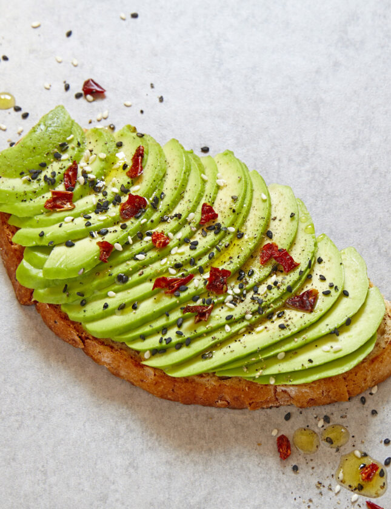
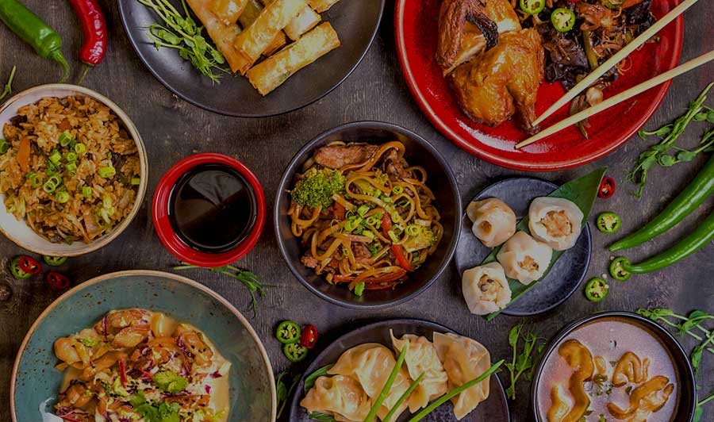
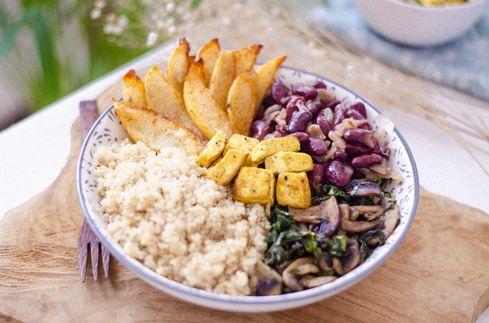
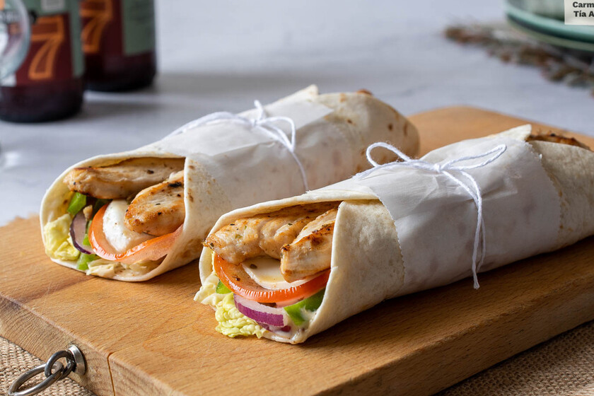

Delizzio!
Recetas fáciles y deliciosas para cualquier ocasión
Un recetario de cocina donde puedes descubrir recetas deliciosas y fáciles de preparar para cada ocasión.
✨ En DELIZZIO creemos que cocinar no tiene que ser complicado,
por eso te compartimos recetas rápidas y llenas de sabor para que sorprendas a tu familia y amigos.
😋 Porque cocinar es un arte... ¡pero también es pura diversión!
👉 Explora nuestro recetario y encuentra tu próxima receta favorita.

Categorías
Recetas

Brownie de chocolate artesanal

Bowl de quinoa con vegetales frescos

Wrap de pollo con vegetales frescos

Chef Mariana
Apasionada por la cocina sencilla y saludable. Comparte recetas con pasos claros, ingredientes accesibles y consejos prácticos para todos los niveles.
Contactar